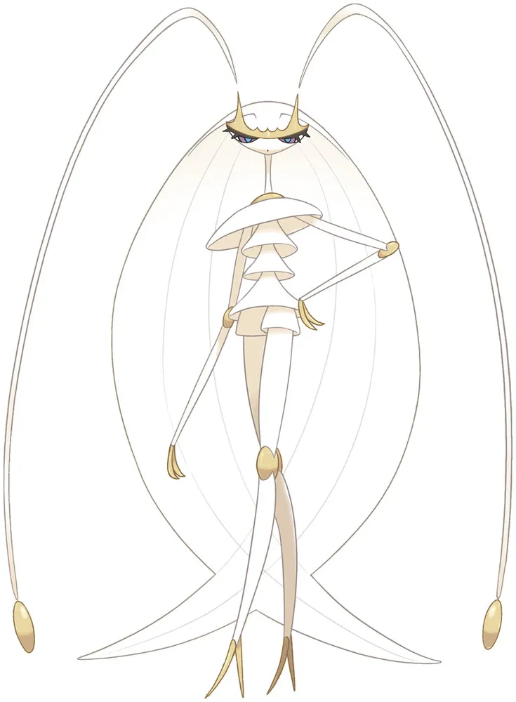
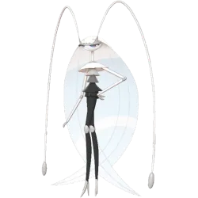

Raid Boss Overview – Pheromosa
Pheromosa is a Bug/Fighting-type Ultra Beast in Pokémon GO. It’s extremely fast and hits very hard, but it’s also very fragile. In raids, it behaves like a classic glass cannon — low defense, high damage output.
Why Pheromosa Matters
Strong Ultra Beast Attacker
- Very high Attack stat, making it a top-tier DPS option in specific situations
- Good for raid damage and gym clearing when used correctly
- Can work as a niche counter depending on moveset advantages
Meta Role
- Part of the Ultra Beast lineup, which often includes strong raid attackers
- Fills a rare Bug/Fighting damage role
- Best used when raw damage matters more than survivability
Raid Value
- Not tanky at all
- No defensive utility
- Pure offensive attacker
Difficulty Level
Raid Difficulty: Medium to High (depends on team strength)
Solo
- Not possible
- It deals too much damage for a single trainer to handle
Duo
- Very tough, only possible with strong counters
- Requires high-level Fire, Flying, or Psychic attackers
- Weather boost (Windy or Sunny) can help a lot
Trio
- Possible for experienced players
- Needs optimized counters and good timing
- Much more comfortable with strong teams
4–6 Players
- Recommended range for most players
- Clear becomes consistent and much safer
- Faster raid completion with decent counters
7+ Players
- Very easy clear
- Minimal coordination needed
Why It Can Feel Difficult
Even though Pheromosa is fragile, it can still feel dangerous because of its high damage output.
- Fast and aggressive attacks
- High DPS pressure on your team
- Frequent fainting if counters are weak
Best Strategy
Recommended Counters
- Fire-type attackers
- Flying-type attackers
- Psychic-type attackers
Avoid Using
- Dark types (they take Fighting damage)
- Grass types (weak against Bug/Fighting pressure)
Pheromosa – Moveset & Raid Boss Analysis
Pheromosa is a pure glass cannon Ultra Beast. It doesn’t stay on the field long, but while it’s active, it can put serious pressure on raid teams depending on its moveset.
- Extremely high damage output
- Very low survivability
- Raid difficulty depends heavily on its moves
Fast Moves
| Move | Type | Pressure Level | Notes |
|---|---|---|---|
| Bug Bite | Bug | Medium | Consistent chip damage and steady energy gain |
| Poison Jab | Poison | High | Strong pressure against Fairy and Fighting counters |
| Low Kick | Fighting | Medium | More effective against Steel and Rock types |
Key Insight
- Poison Jab is the most threatening fast move in raids
- It forces Fairy and Fighting types to be more careful
- Bug Bite is more balanced but still applies steady pressure
Charged Moves
| Move | Type | Damage | Danger Level | Notes |
|---|---|---|---|---|
| Bug Buzz | Bug | High | High | Reliable STAB damage and consistent pressure |
| Focus Blast | Fighting | Very High | Extreme | Can heavily punish Steel, Rock, and Dark counters |
| Lunge | Bug | Medium | Medium | Also reduces the attacker’s damage output |
Key Charged Move Threats
Focus Blast
- Most dangerous move in its kit
- Can heavily damage or remove common raid counters like Steel and Rock types
Bug Buzz
- Solid heavy damage option
- Works well as a consistent STAB attack
Lunge
- Notable for its attack-lowering effect
- Can slow down your raid team’s damage over time
Elite / Special Moves
| Move | Type | Status | Notes |
|---|---|---|---|
| Low Kick | Fighting | Standard | Situational fast move depending on rotation |
| Lunge | Bug | Event-based | Sometimes limited to specific events |
| Focus Blast | Fighting | Standard Charged Move | Main coverage option in raids |
Moveset Pressure Combinations
Poison Pressure Set
- Fast: Poison Jab
- Charged: Focus Blast + Bug Buzz
Most effective against Fairy-heavy or Fighting-heavy teams.
Anti-Steel Set
- Fast: Low Kick
- Charged: Focus Blast
Strong pressure against Steel and Rock types like Metagross and Dialga.
Balanced Set
- Fast: Bug Bite
- Charged: Bug Buzz + Lunge
This is the most neutral and consistent pressure setup.
Move Danger Ranking
| Rank | Move | Reason |
|---|---|---|
| S+ | Focus Blast | Highest burst damage, can delete key counters |
| S | Poison Jab | Strong fast move pressure against common raid teams |
| S | Bug Buzz | Reliable heavy damage output |
| A | Lunge | Damage + attack debuff utility |
| B | Bug Bite | Steady but not threatening |
| B | Low Kick | Situational usage depending on matchup |
Pheromosa Performance Guide
Pheromosa is one of the most extreme glass cannon attackers in Pokémon GO. It has massive Attack stat but extremely low bulk, which directly shapes how it performs across PvE and PvP.
PvE (Raids & Gym Attacking)
Overall Role
- Pheromosa is a top-tier DPS attacker when it stays alive long enough
Best Usage
- Bug-type attacker against Psychic and Dark raids
- Fighting-type attacker against Normal, Rock, and Steel raids
What makes it strong
- Extremely high Attack stat
- Strong move pool for both Bug and Fighting damage
- Very fast raid clear potential
Main limitation
- Very low bulk leads to frequent fainting
- Requires careful team rotation and revives
- Not ideal for beginners
Summary
- High-risk, high-reward raid attacker
- Can outperform bulkier Pokémon in pure damage output
Gyms (Attacking & Defense)
Gym Offense
- Very effective for clearing gyms quickly
- Can take down defenders like Blissey and Snorlax when not resisted
- Best used for fast hit-and-run attacks rather than prolonged fights
Gym Defense
- Not viable for defending gyms
- Faints too quickly to apply any pressure
PvP (Trainer Battles)
Pheromosa’s PvP performance is heavily limited by its extremely low bulk.
Key limitation
- Loses most neutral matchups due to fragility
- Even resisted hits deal significant damage
- Shield usage becomes mandatory in most situations
Great League
- Not available due to CP constraints
Ultra League
Viability: Niche glass cannon
- Can perform well in shielded scenarios
- Applies strong pressure to Dark, Psychic, and Normal types
Good matchups (situational)
- Cresselia
- Registeel (requires smart play)
- Some Dark-type matchups including Giratina-Origin
Bad matchups
- Flying-type attackers like Talonflame
- Charm users
- Bulky Pokémon that can outlast it
Master League
Viability: Very low
- Outclassed by bulky legendary Pokémon
- Cannot survive repeated charged attacks
- Even shield advantage is usually not enough
Common threats
- Mewtwo can overwhelm it easily with Psychic damage
- Most Dragons and Steel-types comfortably tank its attacks
PvP Cups
Pheromosa’s usefulness improves slightly in restricted formats where bulk differences are less punishing.
Bug Cup
- Strong offensive pick
- One of the fastest pressure attackers in the format
- Still fragile, but more usable due to limited counters
Fighting Cup
- High damage potential but risky
- Competes with bulkier Fighters like Medicham
- Wins quickly or loses quickly — little in-between
Psychic Cup
- Niche anti-meta option
- Can punish Psychic-heavy teams early
- Still heavily reliant on shield control
Remix Cups
- Occasional surprise pick
- Works best when opponents are unprepared for it
Pheromosa Raid Strategy Guide
Pheromosa is a fast-paced Ultra Beast raid where the main challenge isn’t bulk, but keeping your attackers alive long enough to maximize damage. Because it’s so fragile, raids usually come down to efficient Flying-type DPS.
Solo Strategy
Is solo possible? Yes, but only for high-level players with optimized teams.
| Requirement | Recommended |
|---|---|
| Trainer Level | 40+ |
| Best Friend Bonus | Helpful but not required |
| Weather Boost | Windy (best for Flying attackers) |
| Mega Pokémon | Highly recommended |
| Revives Needed | Moderate |
Best Solo Counters
- Mega Rayquaza
- Mega Pidgeot
- Rayquaza
- Yveltal
- Moltres
- Honchkrow
- Staraptor
Solo Tips
- Focus entirely on Flying-type damage
- Dodge only when necessary (charged moves that can KO)
- Rejoin quickly after fainting to maintain DPS
- Avoid using bulky Pokémon with low damage output
Duo Strategy
Difficulty: Manageable for experienced players
Best Duo Setup
- Player 1: Mega Rayquaza or Mega Pidgeot
- Player 2: Full Flying-type damage team
Duo Tips
- Sync Mega Evolution timing for maximum boost value
- Use Best Friend bonus if available
- Keep relobby time as short as possible
Trio Strategy
Difficulty: Easy with proper counters
This is a comfortable setup for most coordinated groups, even without fully maxed Pokémon.
- At least one Mega Flying attacker helps significantly
- Use optimized Flying teams instead of random counters
- Avoid Fighting and Dark attackers due to poor effectiveness
General Group Strategy (4–6 Players)
This is the most common and stable raid size for Pheromosa.
- Clear becomes consistent even with mixed teams
- Flying-type attackers still provide the fastest results
- Weather boost improves time-to-win noticeably
Advanced Strategy
For smaller coordinated groups or experienced players:
- Use dedicated Flying-type raid teams
- Include Mega Evolution support where possible
- Time dodges only for high-damage charged moves
- Pre-build raid parties to reduce delays
Expert Strategy
At high level, Pheromosa raids become very fast clears rather than a challenge.
- Solo and duo clears are consistent with optimized teams
- Flying-type glass cannon squads perform best
- Efficiency matters more than survivability
Expert team examples
- Mega Rayquaza
- Shadow Moltres
- Shadow Honchkrow
- Rayquaza
- Yveltal
Expert Tips
- Only dodge lethal charged moves
- Keep DPS uptime as high as possible
- Use XL-powered Flying attackers for faster clears
- Plan relobbies to avoid downtime
Common Raid Mistakes
| Mistake | Impact |
|---|---|
| Using Fighting-types | Low effectiveness due to resistance |
| Using bulky Pokémon | Slower clears due to low damage output |
| Ignoring Flying weakness | Misses the best damage option |
| Auto-selected teams | Often results in poor counter choices |
| Slow relobbying | Reduces overall raid efficiency |
Weather Strategy
| Weather | Effect |
|---|---|
| Windy | Boosts Flying-type attackers (best option) |
| Cloudy | Boosts Pheromosa’s Fighting moves |
| Rainy | No major impact |
Pheromosa Raid Counters Guide
Pheromosa is a high-attack, low-defense Ultra Beast, which makes it extremely vulnerable to strong Flying-type attackers. Because of its glass cannon nature, raids are usually decided by fast, efficient DPS rather than long survivability.
Top Overall Counters
The best way to handle Pheromosa is to focus on Flying-type attackers, which deal super effective damage and take advantage of its low bulk.
| Pokémon | Why It Works |
|---|---|
| Mega Rayquaza | Highest Flying-type DPS and team-wide Mega boost |
| Mega Salamence | Strong Flying damage with excellent raid performance |
| Rayquaza | Dragon Ascent provides top-tier Flying damage |
| Yveltal | Strong Flying attacker with good bulk |
| Moltres | Reliable Flying-type option with consistent damage |
| Staraptor | Budget-friendly high DPS Flying attacker |
| Honchkrow | Glass cannon Flying attacker with high damage output |
| Braviary | Accessible and solid Flying-type attacker |
Mega Rayquaza (Best Overall Counter)
Mega Rayquaza is the strongest option for this raid thanks to its unmatched Flying-type DPS.
- Dragon Ascent delivers top-tier raid damage
- Provides Mega boost to other Flying attackers
- Pheromosa’s low defense makes it melt quickly
Mega Salamence
A strong alternative Mega option for Flying-type damage.
- High DPS Flying attacks
- More accessible than Mega Rayquaza
- Slightly less efficient but still very effective
Moltres
A reliable non-Mega counter that performs consistently well.
- Strong Flying-type damage output
- Fire typing helps resist Bug damage
Staraptor
One of the best budget-friendly counters for this raid.
- Very high Flying DPS for its accessibility
- Easy to power up and use in raids
Counters by Type
Flying Counters (Best Option)
Flying-types are the most effective counters due to strong super-effective damage.
Top Flying attackers:
| Pokémon | Rating |
|---|---|
| Mega Rayquaza | ★★★★★ |
| Rayquaza | ★★★★★ |
| Mega Salamence | ★★★★★ |
| Moltres | ★★★★☆ |
| Yveltal | ★★★★☆ |
| Staraptor | ★★★★☆ |
Fire Counters
Fire-types are useful because they naturally pressure Bug-type Pokémon.
| Pokémon | Notes |
|---|---|
| Mega Charizard Y | Strong Fire/Flying hybrid attacker |
| Reshiram | High Fire-type DPS |
| Heatran | Very tanky option for longer survivability |
Psychic Counters
Psychic-type attackers can also perform well due to Fighting-type weakness.
| Pokémon | Notes |
|---|---|
| Mewtwo | Strong neutral and super-effective damage pressure |
| Mega Alakazam | Very high Psychic DPS |
| Hoopa Unbound | High Attack stat with strong coverage |
Fairy Counters
Fairy-types are situational but useful against Fighting moves.
| Pokémon | Notes |
|---|---|
| Mega Gardevoir | Strong Fairy-type Mega support |
| Xerneas | High Fairy DPS attacker |
| Togekiss | Bulky Fairy option for stability |
Dangerous Raid Moves
| Move | Danger Level | Impact |
|---|---|---|
| Focus Blast | ★★★★★ | High damage potential against Steel and Rock counters |
| Bug Buzz | ★★★★☆ | Strong consistent Bug damage |
| Lunge | ★★★☆☆ | Reduces attacker damage output over time |
| Low Kick | ★★★☆☆ | Fast Fighting pressure move |
Counter Strategy Tips
Best overall approach:
- Use full Flying-type teams whenever possible
- Include a Mega Flying Pokémon for bonus damage
Beginner-friendly options:
- Staraptor
- Honchkrow
- Unfezant
- Moltres
Advanced strategy:
- Lead with Mega Rayquaza
- Use optimized Flying DPS teams
- Take advantage of Windy weather boosts
Best Counter Tier List
| Tier | Pokémon |
|---|---|
| S+ | Mega Rayquaza |
| S | Mega Salamence, Rayquaza |
| A+ | Moltres, Yveltal |
| A | Staraptor, Honchkrow |
| B | Fire / Psychic / Fairy alternatives |
Shiny Comparison – Pheromosa
Pheromosa already has a very distinct Ultra Beast design, and its shiny form only changes it subtly. Unlike some shiny Pokémon with dramatic color shifts, this one is more of a soft visual adjustment rather than a full redesign.
Normal vs Shiny Appearance
Normal Pheromosa
- Bright white / pale cream body
- Pink legs with yellow accent details
- Clean, sharp Ultra Beast aesthetic
Shiny Pheromosa
- Slightly deeper cream-toned body
- Pink areas become more muted
- Yellow accents shift toward a softer golden shade
Visual Difference Summary
| Feature | Normal | Shiny |
|---|---|---|
| Body Color | Bright white | Muted cream tone |
| Legs | Bright pink | Soft, faded pink |
| Accent Color | Yellow | Warm golden tint |
| Overall Look | Sharp and clean | Subtle and warmer |

Normal Pheromosa
Images are used for informational purposes only. All rights belong to their respective owners.

Shiny Pheromosa
Images are used for informational purposes only. All rights belong to their respective owners.
Evolution & Buddy Distance – Pheromosa
Evolution
Pheromosa does not evolve in Pokémon GO or the main series.
- It is a standalone Ultra Beast
- It has no pre-evolution or evolution line
- It exists only in its final form
Buddy Distance
20 km per Candy
Best Ways to Earn Candy Faster
Raids and PvP rewards
- Rare Candies from raids and PvP battles
Pinap Berries
- Used during catches to double candy gain
- Very useful during raid encounters and events
Mega Bonus
- Mega Bug or Fighting-types can help increase bonus candy rewards
Best Mega Evolutions vs Pheromosa
Pheromosa is a Bug/Fighting-type raid boss, which gives it clear weaknesses to Flying, Fire, Fairy, and Psychic attacks. Among these, Flying-type Mega Pokémon are generally the most effective.
Top Mega Counters
Mega Rayquaza
Mega Rayquaza
- Highest Flying-type raid damage in the game
- Excellent against both Bug and Fighting types
- Speeds up raid completion significantly
Mega Charizard Y
Mega Charizard Y
- Strong Fire-type damage against Bug typing
- Easy to use and widely available
- Reliable Mega option for most players
Mega Pinsir
Mega Pinsir
- Strong Flying-type attacker
- Good alternative Mega if Rayquaza is unavailable
Mega Gardevoir
Mega Gardevoir
- Fairy typing helps against Fighting moves
- Also boosts Fairy attackers for the team
Mega Alakazam
Mega Alakazam
- High Psychic-type damage
- Effective against Fighting-type pressure
Recommended Raid Setup
A balanced team for this raid usually focuses on Flying-type damage with Mega support.
- One Flying Mega (preferably Mega Rayquaza)
- Flying-type attackers like Staraptor or similar DPS options
- Fire and Psychic attackers as backup coverage
General Strategy Notes
- Prioritize high DPS over tanky Pokémon
- Flying-type attackers give the fastest clear times
- Use Megas mainly for damage boost support
Boosted Candy & Catching Bonus – Pheromosa
When catching Pheromosa from raids or special events, you can increase your Candy gain using berries and Mega bonuses. Since Ultra Beasts are harder to obtain outside raids, optimizing Candy gain is important for powering it up.
Base Candy from Catching
Every successful catch normally gives:
- 3 Candy per catch
- Additional Candy possible through bonuses
Pinap Berry Bonus
Pinap Berries are the easiest way to double your Candy from Pheromosa encounters.
| Situation | Candy Earned |
|---|---|
| Normal catch | 3 Candy |
| With Pinap Berry | 6 Candy |
| With Silver Pinap Berry | 7–8 Candy |
Mega Evolution Bonus
Having an active Mega Evolution of the same type can slightly improve Candy rewards from catches.
- Bug or Fighting-type Mega boosts improve Candy bonus chances
- Can occasionally add extra Candy per catch
XL Candy (High-Level Progression)
XL Candy becomes important for players powering Pheromosa beyond level 40.
- Used for Level 40–50 upgrades
- Important for maximizing raid and PvP performance
- Higher catch-level Pokémon have better XL Candy chances
Best Candy Farming Setup
The most efficient way to farm Candy from Pheromosa is combining berries, Mega bonuses, and accurate throws.
| Method | Benefit |
|---|---|
| Pinap Berry | Doubles Candy from each catch |
| Mega Evolution active | Improves bonus Candy chances |
| Excellent Curveball throws | Higher catch success rate |
| Raid catches | Highest base Candy reward source |
Weaknesses of Pheromosa
Pheromosa is a Bug/Fighting-type Ultra Beast with extremely high Attack but very low defensive stats. This makes it powerful in raids, but very easy to knock out when countered correctly.
Type Weaknesses
Fire
- Bug-type is weak to Fire attacks
- Fire-type Pokémon deal strong, consistent damage
Fire counters are effective because they take advantage of Pheromosa’s low bulk and Bug weakness.
Flying
- Fighting-type is weak to Flying attacks
- Flying attackers usually have very high DPS in raids
This is Pheromosa’s most exploitable weakness, especially in raid battles.
Psychic
- Fighting-type is weak to Psychic attacks
Psychic attackers can deal heavy damage quickly due to Pheromosa’s low defense.
Rock
- Bug-type is weak to Rock attacks
Rock-type moves like Smack Down and Rock Slide can deal significant damage in raids.
Fairy
- Not super effective offensively
- However, Fairy-type Pokémon often have high bulk and can survive longer in PvP scenarios
Stat Disadvantage
Beyond type weaknesses, Pheromosa’s stats make it fragile in almost every battle situation.
- Very low Defense
- Very low HP
- Very high Attack
This combination makes it a classic glass cannon Pokémon.
Weakness Summary
| Type | Effect |
|---|---|
| Fire | Super effective |
| Flying | Super effective (most important weakness) |
| Psychic | Super effective |
| Rock | Super effective |
Battle Impact
In Raids (as a boss)
- Deals high damage but is easy to defeat with proper counters
- Does not stay on the field for long against strong Flying attackers
In PvP
- Can deal high burst damage if shielded well
- Very difficult to use consistently due to low bulk
Resistances – Pheromosa
Pheromosa is a Bug/Fighting-type Ultra Beast with a very limited defensive profile. While it does resist a few types, its overall bulk is so low that these resistances rarely change battle outcomes in raids.
What Pheromosa Resists
| Type | Damage Taken | Reason |
|---|---|---|
| Bug | Reduced damage | Bug-type interaction |
| Grass | Reduced damage | Bug resistance |
| Fighting | Reduced damage | Bug typing reduces Fighting damage |
How These Resistances Actually Help
Bug resistance
- Reduces damage from Bug-type attacks
- Rarely relevant in most raid matchups
Grass resistance
- Provides minor defensive help in niche situations
- Not a major factor in raids
Fighting resistance
- Most useful of the three resistances
- Can slightly reduce damage from Fighting-type moves in PvP
Important Weakness Context
Despite having a few resistances, Pheromosa is still heavily pressured by common attacking types.
- Fire
- Flying
- Psychic
- Rock
- Fairy
These matchups are far more important in raids and PvP than its minor resistances.
Defensive Profile
Pheromosa is designed as a pure glass cannon.
- Very high Attack
- Very low Defense
- Very low HP
Because of this, resistances only slightly delay fainting rather than meaningfully improving survivability.
Practical Raid Impact
Where resistances help slightly
- Reduced damage from Fighting and Bug moves
- Occasional survivability boost in neutral matchups
Where they don’t matter much
- Flying, Fire, and Psychic attackers still deal heavy damage
- Most raid bosses hit Pheromosa for super effective damage anyway
Conclusion – Pheromosa
Pheromosa is one of the strongest raw DPS attackers in Pokémon GO, but it comes with a clear trade-off—it cannot take hits. This makes it extremely powerful in the right hands, but unreliable in longer or messier battles.
Performance Overview
Raids (PvE)
- Top-tier Fighting and Bug-type damage dealer
- Best used for fast raid clears
- Performs well in coordinated teams with proper support
It shines most when battles are short and you can focus purely on damage output.
PvP (Trainer Battles)
- Limited usability in open leagues
- Too fragile for consistent performance
- Can work in niche or special cup formats
Overall, it’s more of a surprise or high-risk pick rather than a stable PvP option.
Gym Battles
- Not recommended for defense
- Can be used for quick offensive clearing
Key Limitation
Pheromosa’s biggest issue is its extreme fragility.
- Very low Defense
- Very low HP
- Faints quickly to most charged attacks
This makes positioning and timing more important than with most other attackers.
Best Use Cases
Pheromosa works best if you:
- Focus on raid damage output
- Prefer fast battle completion over safety
- Have strong teams that can support glass cannon attackers
When It’s Not Ideal
You may want to avoid it if you prefer:
- Tanky, easy-to-use Pokémon
- Stable PvP performance
- Low-maintenance raid teams
Catch CP for Pheromosa
Base Catch CP Range
Normal (No Weather Boost)
- CP range: ~1800 – 1900
- 100% IV CP: 1906
Weather Boosted
- CP range: ~2250 – 2380
- 100% IV CP: ~2383
How CP Indicates IV
| CP Range | Meaning |
|---|---|
| ~1800–1850 | Low IV Pokémon |
| ~1850–1890 | Mid-range IV |
| 1906 | Perfect IV (no weather boost) |
| ~2383 | Perfect IV (weather boosted) |
Catch Difficulty
Pheromosa can feel harder to catch compared to many raid bosses due to its aggressive behavior.
- Frequent attack animations
- Fast movement and jump timing
- Smaller window for accurate throws
Best Catch Strategy
To improve your catch success rate, focus on timing and consistency rather than speed throwing.
- Use Golden Razz Berry for maximum catch rate
- Stick to curveball throws
- Aim for Excellent throws when possible
- Wait for attack animation, then throw immediately after
Weather Boost for Pheromosa
Weather conditions can increase both Pheromosa’s power and its difficulty in raids. Since it is a Bug/Fighting-type Ultra Beast, certain weather types directly boost its attack performance and make raid battles more challenging.
Weather That Boosts Pheromosa
Rainy Weather
- Boosts Bug-type moves
- Increases damage from Pheromosa’s Bug attacks
Cloudy Weather
- Boosts Fighting-type moves
- Improves damage output from Fighting attacks
Effect on Raid Battles
When Pheromosa is weather boosted, it becomes more difficult to defeat due to increased damage output.
- Higher CP during encounter
- Stronger fast and charged move pressure
- Increased overall raid difficulty
Impact on Counters
Rainy Weather (Bug boost)
- Bug moves deal more damage than usual
- Fire-type counters remain the most reliable option
- Steel-types continue to perform consistently
Cloudy Weather (Fighting boost)
- Fighting moves become significantly stronger
- Rock, Ice, and Dark-type counters take more pressure
- Flying-types become more important for damage output
Best Counters in Weather Conditions
Steel-types (Most Reliable)
- Resist both Bug and Fighting attacks
- Maintain stability in all weather conditions
Fire-types
- Strong against Bug-type moves
- High damage output for faster clears
Flying and Psychic-types
- High damage potential
- More effective when Fighting boost is not active
Why Weather Boost Matters
Weather boost affects Pheromosa more than many raid bosses because of its extreme offensive stats.
- Damage output becomes noticeably higher
- Raid teams faint faster under pressure
- Dodging becomes more important for survival
Is Pheromosa Worth Raiding?
Pheromosa is one of the highest DPS Ultra Beasts in Pokémon GO, but it comes with a major drawback—it is extremely fragile. Whether it is worth raiding depends on whether you value raw damage output or overall usability.
PvE Value (Raids & Gyms)
Why it’s strong
- Among the highest Attack stats in the game
- Delivers extremely fast raid damage
- Strong Bug and Fighting-type coverage
Where it performs well
- Psychic-type raids
- Dark-type raids
- Grass-type raids
- Normal-type raids as a Fighting attacker
Main limitation
- Very low bulk makes it faint quickly
- Often requires frequent revives in longer raids
- Performance depends heavily on dodging and timing
PvP Value
Pheromosa is difficult to use in Trainer Battles due to its extremely low survivability.
- Very high damage potential but extremely fragile
- Loses most neutral matchups quickly
- Requires shields to function properly
It is generally not used in:
- Great League
- Ultra League
- Master League
Battle Role
- Pure offensive attacker
- No defensive or support utility
- No Mega evolution benefit
Should You Raid Pheromosa?
Good choice if you:
- Want a top-tier DPS Bug/Fighting attacker
- Collect Ultra Beasts
- Focus on raid optimization and speed clears
You may skip it if you:
- Prefer tanky, easy-to-use Pokémon
- Are early in your Pokémon GO journey
- Already have strong Fighting attackers like Terrakion, Lucario, or Conkeldurr
Personal Raid Experience – Pheromosa
First Impression
Pheromosa feels noticeably different from most Ultra Beast raids right from the start. The battle pace is extremely fast, and there’s very little downtime between attacks.
- Fast and constant attack animations
- High damage pressure from the beginning
- Very little time to recover or adjust teams mid-fight
How the Battle Feels
Once the raid begins, the fight tends to escalate quickly depending on your team setup.
Early phase
- Constant Bug and Fighting-type pressure
- Fast moves keep your team under stress
- No real “safe” moments in the battle
Mid battle
- Charged moves start landing more frequently
- Weak or unoptimized teams begin to fall behind
- Glass cannon attackers faint quickly here
Late battle
- Relobbies become more noticeable if counters are weak
- Timer pressure starts to matter
- Small mistakes can slow the clear significantly
With strong counters, however, the raid feels completely different—the boss goes down quickly and smoothly.
What This Raid Teaches You
Raw DPS alone isn’t enough
High Attack Pokémon perform well, but consistency matters just as much in this raid.
- Balanced teams last longer
- Survivability improves overall damage output
Flying-type advantage is very clear
Because Pheromosa is Bug/Fighting-type:
- Flying attackers deal strong super effective damage
- They also resist Fighting pressure effectively
Very fragile Pokémon struggle here
Glass cannon attackers without bulk tend to fall quickly, which reduces overall raid efficiency.
When the Raid Goes Well
A well-prepared group makes this raid feel fast and satisfying.
- Minimal fainting
- Consistent damage flow
- Quick boss defeat
When the Raid Goes Wrong
Unoptimized teams can make the fight noticeably harder than expected.
- Frequent fainting cycles
- Incorrect type matchups
- Timer pressure near failure range
This raid heavily punishes unbalanced teams and random auto-selected counters.
Unique Insights – Pheromosa
Glass cannon isn’t a drawback — it defines how you play it
Pheromosa doesn’t really function like a normal raid attacker. You don’t use it to stay on the field; you use it for short, high-impact damage bursts before it faints.
- It’s not meant to survive long fights
- The goal is to deal as much damage as possible in a short window
Move timing matters more than raw DPS numbers
On paper, DPS looks great—but in actual raids, performance depends more on rhythm and timing.
- Fast move speed affects how quickly charged moves come online
- Well-timed charge cycles matter more than sustained damage
- Small delays can reduce total output significantly
Small mistakes are punished quickly
Because of its low bulk, even minor errors affect performance more than usual.
- Mistimed dodges often lead to instant fainting
- Delayed switches can waste entire damage cycles
Weather plays a bigger role than most players expect
Pheromosa’s effectiveness shifts depending on weather conditions in a noticeable way:
- Sunny weather increases Fire-type pressure, making it harder to keep Pheromosa alive
- Rainy weather generally reduces overall raid pressure
- Snow weather increases Ice-type presence, which can also be dangerous for it
Perception changes a lot with experience
| Player Level | How Pheromosa Feels |
|---|---|
| Beginner | Feels too fragile to use effectively |
| Intermediate | High damage, but risky in longer raids |
| Expert | Very efficient raid attacker when used correctly |
Pheromosa FAQ
What is Pheromosa?
Pheromosa is a Bug/Fighting-type Ultra Beast introduced in Pokémon GO. It is known for its extreme speed and very high attack stat, making it one of the strongest glass cannon attackers in raids.
Is Pheromosa good in raids?
Yes—Pheromosa is one of the highest DPS attackers in the game, especially against:
- Dark-type bosses
- Psychic-type bosses
- Grass-type bosses
- Grass-type bosses
However, it is extremely fragile, so it faints quickly.
What are Pheromosa’s best moves?
Best Raid Moveset:
- Fast Move: Bug Bite
- Charged Move: Bug Buzz / Focus Blast
Alternative:
- Low Kick (for Fighting DPS role)
Is Pheromosa good in PvP?
Not really.
- Very low bulk
- Dies too quickly
- Needs shields constantly
What makes Pheromosa special?
- One of the highest Attack stats in Pokémon GO
- Extremely fast damage output
- Ultra Beast status gives it unique raid relevance
What are its weaknesses?
Pheromosa is double-weak to:
- Fire
- Rock
- Fairy
- Flying
- Psychic
What are the best counters against Pheromosa raids?
Top counters include:
- Mewtwo (Psychic attackers)
- Moltres (Fire/Flying damage)
- Rayquaza (Flying DPS)
- Metagross (Tanky neutral DPS)
Is Pheromosa worth powering up?
Yes if:
- You want top-tier raid DPS
- You have strong raid teams
No if:
- You want PvP Pokémon
- You prefer bulky attackers
Is Pheromosa useful for beginners?
Beginners may struggle because:
- It faints quickly
- Requires dodging and strong team support
Final Summary
Pheromosa is:
- Extremely powerful attacker
- Extremely fragile
- Best used in raids, not PvP
Pokédex Entry – Pheromosa
Basic Info
- Pokémon Name: Pheromosa
- Type: Bug / Fighting
- Category: Lissome Pokémon (Ultra Beast)
- Generation: VII (Alola)
- Classification: Ultra Beast (UB-02 Beauty)
Pokédex Description
Pheromosa is an Ultra Beast from Ultra Space known for its unusual combination of elegance and overwhelming speed. It moves with such precision that it often looks more like a machine than a living creature.
Despite its graceful appearance, it is considered highly dangerous due to its raw speed and offensive power. In most encounters, it relies on quick strikes rather than prolonged battles.
Key Traits
Extreme Speed
- Among the fastest known Pokémon
- Often acts before opponents can react
Glass Cannon Design
- Very high Attack stat
- Extremely low bulk
- Struggles in any extended fight
Ultra Beast Origin
- Originates from Ultra Space
- Arrives through Ultra Wormholes
- Behavior differs from standard Pokémon patterns
Battle Style
Strengths
- High burst damage output
- Fast-paced raid and PvP pressure
- Strong Bug and Fighting STAB performance
Weaknesses
- Very low defensive stats
- Weak to common attacking types:
- Fire
- Flying
- Psychic
- Fairy
Behavior & Nature
- Tends to avoid unnecessary contact
- Relies on speed rather than endurance
- Becomes aggressive when directly engaged
Habitat
- Does not naturally exist in the Pokémon world
- Appears temporarily via Ultra Wormholes
- Often observed alongside other Ultra Beasts
Battle Role
Raids (PvE)
- High DPS attacker with strong offensive typing
- Works best in short-duration battles
- Requires support or strong coordination in longer fights
PvP
- Glass cannon niche pick
- Very matchup-dependent
- Best suited for limited formats
Overall Use
- Pure offensive role
- No defensive utility
- Built entirely around speed and damage
Pheromosa Catch Guide
Catching Pheromosa can feel difficult mainly because of its frequent movement and attack animations. The key is patience and consistent Excellent curveball throws rather than rushing attempts.
Use Golden Razz Berries
Golden Razz is the safest option for Pheromosa raids because it gives the highest catch bonus.
- Best overall berry for raid catches
- Helps stabilize catch rate on low Premier Ball attempts
Silver Pinap can be used, but only if you’re confident with Excellent throws.
Focus on Excellent Curve Throws
Most successful catches come from consistent Excellent throws rather than Great or Nice throws.
- Always use curveballs
- Aim for consistent Excellent timing instead of rushing
- Wait for a stable circle before throwing
Timing Matters More Than Speed
Pheromosa moves and attacks frequently, so throwing during its motion usually leads to misses.
- Wait for its attack animation to finish
- Throw during the short idle window afterward
- Avoid panic throws when it jumps or shifts position
Circle Control Technique
A simple and effective method is setting the circle before committing to the throw.
- Hold the ball until the circle reaches Excellent size
- Wait for attack animation
- Release immediately after the animation ends
Common Mistakes
- Throwing while Pheromosa is attacking or jumping
- Using Pinap berries when catch is not secure
- Not using curveballs consistently
- Rushing throws instead of waiting for timing windows
- Losing accuracy due to panic throws
Best Overall Strategy
The most consistent approach is simple:
- Use Golden Razz Berry
- Set Excellent circle size
- Wait for attack animation
- Throw curveball at idle moment
Once you get used to its movement pattern, Pheromosa becomes much easier to catch consistently.
Pheromosa Raid Mistakes (and Fixes)
Pheromosa raids are less about raw difficulty and more about team choices. Most failures come from using the wrong counters or not adjusting to its fast attack pressure.
Using Dark or Psychic Pokémon
This is one of the most common mistakes.
- Dark types take heavy damage from Fighting moves
- Psychic types are weak to Bug damage
These Pokémon usually faint too quickly, reducing overall raid efficiency.
Better options: Flying, Fire, Rock, and Fairy attackers perform much more consistently.
Relying Too Much on Glass Cannon Pokémon
High DPS Pokémon like Gengar-style attackers look good on paper, but they often don’t last long enough in this raid.
- Pheromosa applies constant pressure with fast and charged moves
- Fragile attackers faint before reaching full value
Balanced attackers generally perform better over the full fight.
Ignoring Flying-Type Advantage
Flying types are one of the safest and most effective choices here.
- They resist Bug and Fighting damage
- They deal strong super effective damage
Despite this, many players still rely too heavily on Rock or Ice teams, which can be less consistent.
Not Dodging Key Charged Moves
Two moves define most of the raid pressure:
- Focus Blast (high burst damage)
- Bug Buzz (steady heavy damage)
Focus Blast is the main move worth dodging consistently, especially on fragile Pokémon.
Weak Mega Usage
Many players enter the raid without using a Mega evolution, which reduces overall team performance.
Megas provide a significant damage boost for matching types and improve overall raid speed.
Common strong choices include:
- Mega Charizard Y for Fire teams
- Mega Rayquaza or Mega Pinsir for Flying teams
Overbuilding Rock-Type Teams
Rock attackers can work, but they are not the most stable option for this raid.
- They are vulnerable to Fighting damage
- Many Rock attackers are slower in practice
Rock types are best used as secondary or backup options rather than full teams.
Poor Team Composition
One of the biggest issues is simply using unbalanced teams.
- Mixed or random Pokémon selections reduce DPS efficiency
- Lack of synergy slows down raid completion
A more consistent setup focuses on Flying and Fire attackers with a Mega boost when possible.
Slow Relobbying
Since Pheromosa can knock out teams quickly, delays between relobbies can cost valuable time.
- Pre-selecting backup teams helps maintain DPS uptime
- Fast re-entry keeps raid momentum stable
Underestimating Its Attack Speed
Even though Pheromosa is fragile, it applies pressure faster than expected.
- Constant fast move output
- High damage charged attacks
It’s best treated as a high-pressure raid boss rather than a simple glass cannon.
Related Posts
You may also find these Pokémon GO raid guides helpful: